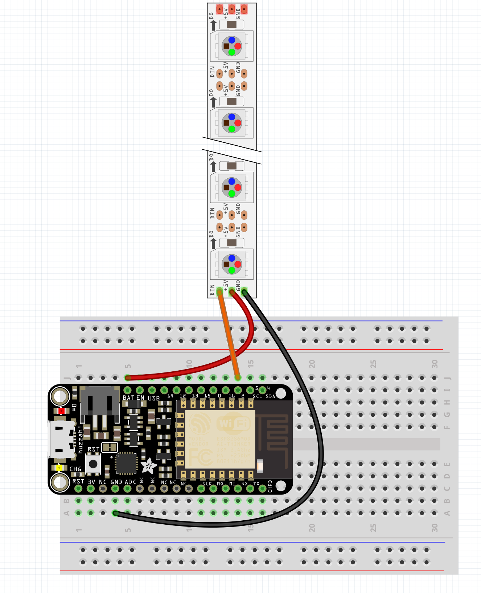

Sending OSC data from the ESP
Install https://github.com/CNMAT/OSC
Download zip, extract, remove -master at end
Place in documents/arduino/libraries folder
Open ESP8266sendMessageADXL
Change lines 22 and 23 to the wifi
set line 26 to your computers IP address
cd osc_simple
npm install & node index.js
cd osc_threejs
npm install & node index.js
open localhost:3000


Open a terminal
sudo npm install mosca bunyan -g
mosca -v | bunyan
Open a second terminal
mqtt sub -t '/hello' -h 'localhost'
Open a third terminal
mqtt pub -t '/hello' -h 'localhost' -m 'hi from me'
In Arduino install the PubSubClient Library
Connect some WS2812's

In Arduino install the PubSubClient Library
Open mqtt_esp8266_neopixel
Set wifi on lines 41 and 42
Set server on line 43
mqtt pub -t '/hello' -h 'localhost' -m '1'
mqtt pub -t '/hello' -h 'localhost' -m '2'
mqtt pub -t '/hello' -h 'localhost' -m '3'
Open MQTT_panel in a text editor
set line 8 to the server
cd in terminal, npm install, noder index.js, go to localhost:3000
Try setting all feathers to the same server